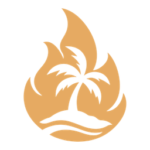
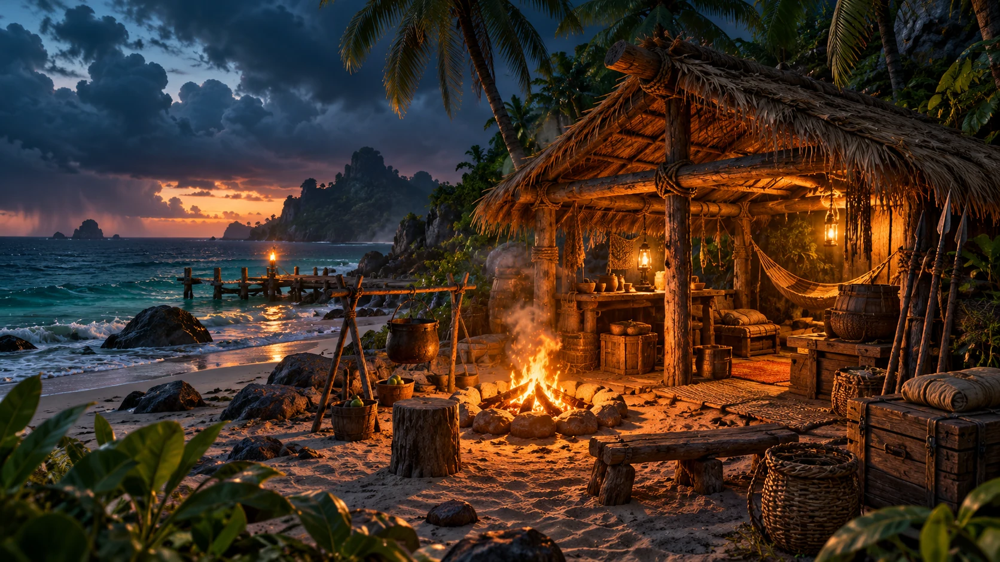
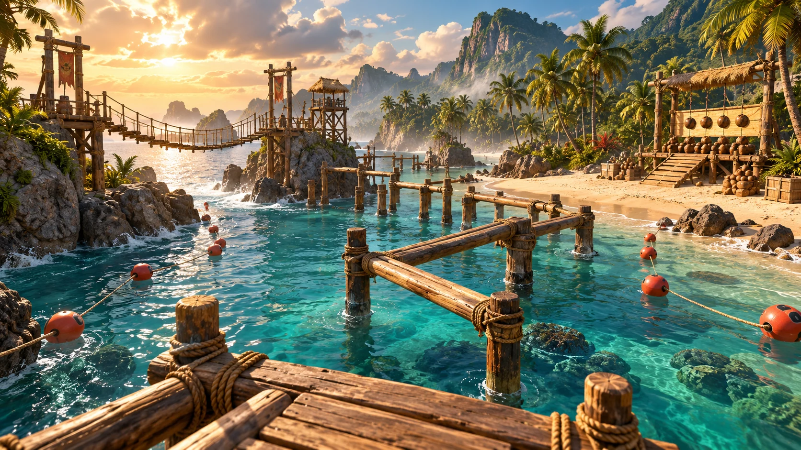

Şimdi
Ada, kamp ve yarışma döngüsünü gösteren bu interaktif önizleme.

OUTVOTERSBir ada. Bir kamp. Tek kazanan.
Birlikte bir kamp kur. Parkurda sınırlarını zorla. Akşam, kime güveneceğine karar ver.
Ada döngüsünü deneErken geliştirme aşamasındaki indie PC oyunu
Gündüz takım arkadaşın. Akşam rakibin.
Çatıyı birlikte yaparsınız. Son yemeği paylaşırsınız. Sonra aynı ödül için yarışırsınız. Adada yaptığın her şey, bir sonraki yarışmayı ve insanların sana bakışını etkiler.
Çatıyı mı bitireceksin, ateşi mi koruyacaksın, yoksa dinlenecek misin?
Kamp ateşinde sohbet. Ormanda özel konuşmalar. Konseyde herkesin duyduğu kararlar.

KAMP / AKŞAMBecerin konuşsun
Suya gir. Dengeni bul. Hedefi vur.
Sonucu senin hareketlerin belirlesin.

Bayrağa ulaşmak için güvenli uzun rotayı mı, açık sudaki kısa yolu mu seçeceksin? Bayrağı kıyıya ilk getiren kazanır.
Okumak yerine bir karar ver
Kampı hazırla, atışını yap, ödül için oy ver.
Oyun döngüsünün tarayıcıdaki küçük bir önizlemesi.
Yağmur yaklaşıyor
Herkese yardım edecek bir hazırlık mı, kendin için dinlenmek mi?
Simülasyon değerleri
Tek bir hazırlık seç. Sonucu parkura taşı.
Henüz bir hazırlık seçmedin.
İşaret merkezdeki bölgeye geldiğinde atış yap. Klavyede boşluk tuşunu da kullanabilirsin.
Hazır olduğunda ilk atışını yap.
Kampın ödülünü nasıl kullanacağına oy ver. Bu önizlemede yalnızca senin oyun sayılır.
Oyunu kullan, günün sonucunu gör.
Günün hikâyesi
Önizleme başlatılamadı. Günü yeniden başlatıp tekrar deneyebilirsin.
Bu, oyun fikrinin çalışan bir tarayıcı önizlemesidir. Tam 3D oyun, çevrimiçi oyuncular ve mikrofon bağlantısı bu demoda yer almaz.
Adayı birlikte şekillendiriyoruz
Outvoters, Steam için planlanan erken aşama bir indie PC oyunu. Bu sayfa oyun vizyonunu ve ilk interaktif konsepti paylaşıyor.
Konsepte geri dönAda, kamp ve yarışma döngüsünü gösteren bu interaktif önizleme.
Küçük bir adada hareket, yüzme, atış ve ortak barınak sistemlerini deneyen oyun prototipi.
Geliştirme ve test desteği; ileride sınırlandırılmış sunucu anlatımı ve sezon özetleri. API entegrasyonu henüz canlı değil. Kurallar ve kazanan oyun sistemi tarafından belirlenir.